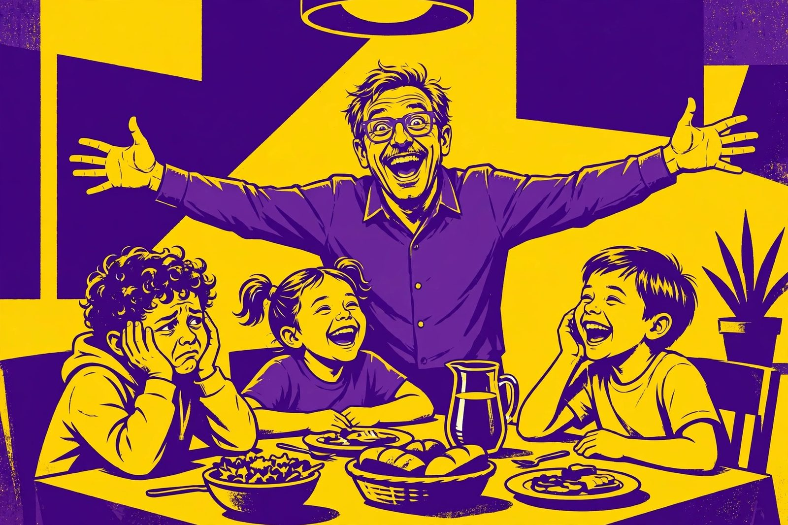

101 classic dad jokes that never get old

A dad joke is a special thing: a joke so corny it circles all the way back around to wonderful. These are the greatest hits — clean, kind, and guaranteed to get a groan.
The sincere part: dad jokes are love in disguise. A dad telling a bad joke at the dinner table is really saying, "I'm here, I'm goofy, and I want to make you smile." Kids roll their eyes, but they remember — and years later they tell the same jokes. It's a tradition worth keeping.
- Fake noodle? An impasta.
- Scientists don't trust atoms? They make up everything.
- Restaurant on the moon? Great food, no atmosphere.
- Ocean to the beach? Nothing, it just waved.
- Scarecrow win an award? Outstanding in his field.
- Cheese that isn't yours? Nacho cheese.
- Nose twelve inches long? Then it'd be a foot.
- Buffalo's kid leaves for school? Bison.
- Bicycle fall over? It was two-tired.
- Broken can opener? A can't opener.
- Space party? You planet.
- Coffee file a police report? It got mugged.
- One wall to the other? Meet you at the corner.
- Skeletons never fight? No guts.
- Fish with no eyes? A fsh.
- Golfer bring two pairs of pants? In case of a hole in one.
- Man go to the dentist? Tooth-hurt-y.
- Tomato blush? It saw the salad dressing.
- Factory making okay products? A satisfactory.
- Math book look sad? Too many problems.
- Zero to the eight? Nice belt!
- Eggs don't tell jokes? They'd crack each other up.
- I had a time-travel joke, but you didn't like it yet.
- Told my wife her eyebrows were too high. She looked surprised.
- Sleeping bull? A bulldozer.
- Cookie see a doctor? It felt crumby.
- Orange that sounds like a parrot? A carrot.
- Penguin build its house? Igloos it together.
- Stadium get hot? All the fans left.
- Left eye to right eye? Something smells between us.
- Student eat his homework? Teacher said it was a piece of cake.
- Bear with no teeth? A gummy bear.
- Invisible man skip the interview? He couldn't see himself doing it.
- Snowman with a six-pack? An abdominal snowman.
- Cows stay informed? They read the moo-spaper.
- Banana date a prune? It couldn't find a date.
- Cloud wear under its raincoat? Thunderwear.
- Picture go to jail? It was framed.
- Boomerang that won't return? A stick.
- Tired calendar? I'm full of dates.
- Tree fits in your hand? A palm tree.
- Frog take the bus? His car got toad.
- Pile of cats? A meowtain.
- Belt get arrested? It held up a pair of pants.
- Best thing about Switzerland? The flag's a big plus.
- Gym close down? It just didn't work out.
- Hat to the scarf? You hang around; I'll go ahead.
- Can't give Elsa a balloon? She'll let it go.
- Funny mountain? Hill-arious.
- Chicken visit a medium? To reach the other side.
- Snowman crossed with a vampire? Frostbite.
- Mushroom go to the party alone? He was a fun-gi.
- Janitor jumps out of the closet? Supplies!
- Teddy bear skip dessert? He was stuffed.
- Make a tissue dance? Put a little boogie in it.
- Smartphone need glasses? It lost all its contacts.
- Alligator in a vest? An investigator.
- Opera singer go sailing? To hit the high Cs.
- One plate to the other? Lunch is on me.
- Computer see a doctor? It had a virus.
- Lazy kangaroo? A pouch potato.
- Orange stop? It ran out of juice.
- Mama tomato to slow baby tomato? Ketchup!
- Cows wear bells? Their horns don't work.
- Big flower to little flower? Hi, bud!
- Man put money in the freezer? He wanted cold, hard cash.
- Dog that does magic? A labracadabrador.
- Skeleton skip the party? He had no body to go with.
- Sad strawberry? A blueberry.
- Baseball player go to jail? He got caught stealing.
- Dinosaur crash his car? Tyrannosaurus wrecks.
- Kid bring a ladder to school? He wanted to go to high school.
- Centipede crossed with a parrot? A walkie-talkie.
- Baker quit making donuts? Tired of the hole thing.
- Cow with no legs? Ground beef.
- Clock go to therapy? It was ticked off.
- Fish in a bowtie? Sofishticated.
- Lamp go to school? To get brighter.
- Grape get stepped on? It let out a little wine.
- Duck see a chiropractor? To get its back quacked.
- Belt made of watches? A waist of time.
- Programmer quit? He didn't get arrays.
- Deer with no eyes? No-eye deer.
- Broom late? It overswept.
- Fix a broken pizza? Tomato paste.
- Astronaut break up? He needed space.
- Pig that does karate? A pork chop.
- Melon jump in the lake? It wanted to be a water-melon.
- Traffic light to the car? Don't look, I'm changing.
- Horse go behind the tree? To change its jockeys.
- Story about a broken pencil? Pointless.
- Library book see a doctor? It had a bad spine.
- Man with a rubber toe? Roberto.
- Gardener plant light bulbs? He wanted a power plant.
- Elephant that doesn't matter? An irrelephant.
- Well-balanced horse? Stable.
- Student bring a pencil to bed? To draw the curtains.
- Sheep with no legs? A cloud.
- Catch a squirrel? Climb a tree and act like a nut.
- Cheese cross the road? To get to the other slice.
- Dad run out of jokes? "That's all, folks — I'm out of puns."
Keep the tradition going: pick five favorites, memorize them, and deploy them at the next family dinner. Bonus points for maximum eye-roll.